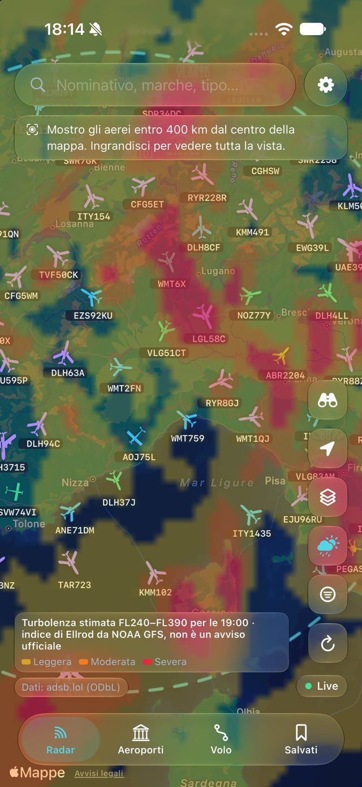
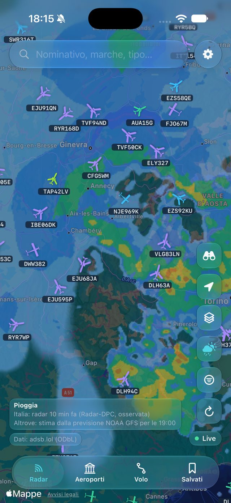
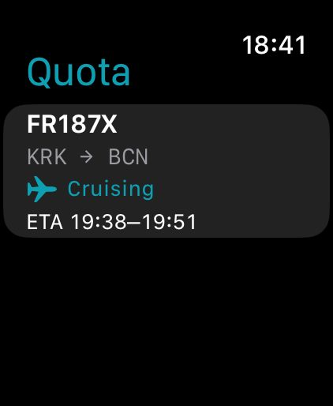
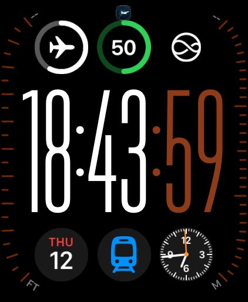
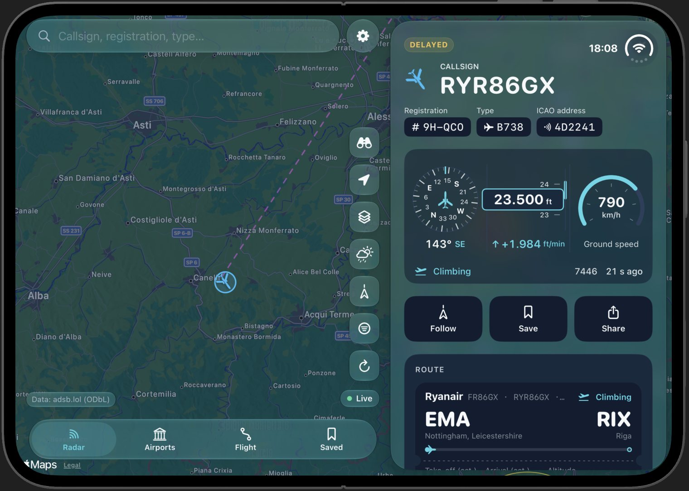
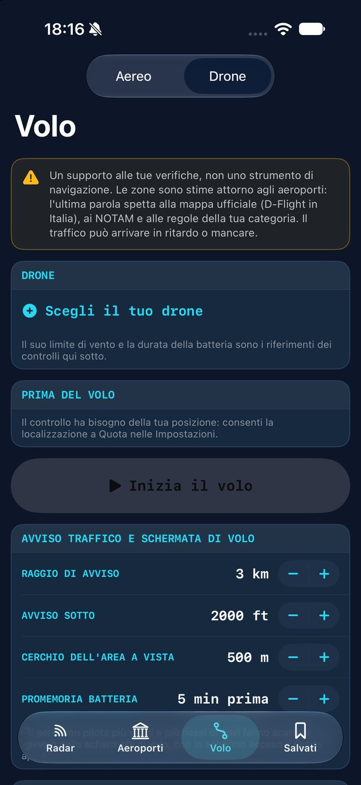

Quota – Flight Radar
Real aircraft.
Nothing invented.
Aerei veri.
Niente di inventato.
Live traffic worldwide with the weather on every map, your flight as a boarding pass and on Apple Watch, every airport down to the car park, and tools for pilots and drone pilots.
Traffico in diretta in tutto il mondo con il meteo su ogni mappa, il tuo volo come carta d'imbarco e su Apple Watch, ogni aeroporto fino al parcheggio e strumenti per piloti e per i droni.
Weather on every map.
Off until you want it.
Il meteo su ogni mappa.
Spento finché non lo vuoi.
One layers panel, the same on the radar, the flight plan, flight mode and the drone map. Everything starts off: turn on what you need.
Un solo pannello dei livelli, uguale su radar, piano di volo, modalità volo e mappa del drone. Parte tutto spento: accendi quello che ti serve.


Wind you can see
Il vento da vedere
Animated from the NOAA GFS forecast, and corrected with the wind measured by aircraft in flight.
Animato dalla previsione NOAA GFS e corretto con il vento misurato dagli aerei in volo.
Rain, everywhere
La pioggia, ovunque
The Civil Protection radar over Italy, a NOAA GFS estimate elsewhere, and NASA's rain from space. Always labelled, opacity yours.
Il radar della Protezione Civile sull'Italia, una stima NOAA GFS altrove e la pioggia dallo spazio della NASA. Sempre indicate, opacità a tua scelta.
Forecast maps
Mappe di previsione
Clouds, thunderstorms, visibility, freezing level, icing and the jet stream, from NOAA GFS.
Nuvole, temporali, visibilità, zero termico, ghiaccio e corrente a getto, da NOAA GFS.
What pilots report
Quello che dicono i piloti
A turbulence estimate, PIREPs, METARs and SIGMETs, on the same map as the traffic.
Una stima della turbolenza, PIREP, METAR e SIGMET, sulla stessa mappa del traffico.
Your flight.
From the gate to the runway.
Il tuo volo.
Dal gate alla pista.

Every flight, in detail.
Ogni volo nel dettaglio.
Tap any aircraft for its callsign, type and registration, with instruments that move.
Tocca un aereo per nominativo, tipo e marche, con strumenti che si muovono.

The whole flight, in profile.
Tutto il volo, di profilo.
Departure, track and usual route, with a vertical profile and the weather along the way.
Partenza, scia e rotta abituale, con il profilo verticale e il meteo lungo la rotta.

Always in view.
Sempre in vista.
A boarding pass in widgets, as a Live Activity and in the Dynamic Island.
Una carta d'imbarco nei widget, come Live Activity e nella Dynamic Island.


On your wrist.
Al polso.
The aircraft you follow and your flights on Apple Watch, with complications for the watch face.
L'aereo che segui e i tuoi voli su Apple Watch, con le complicazioni per il quadrante.

Notify me when it leaves.
Avvisami quando parte.
Search a flight that isn't flying yet. Quota tells you the moment it shows up.
Cerca un volo non ancora in aria. Quota ti avvisa appena compare.

Your flight log.
Il tuo storico voli.
Every flight you followed, on all your devices through your own iCloud, exportable as GPX, CSV or PDF.
Ogni volo che hai seguito, su tutti i tuoi dispositivi con il tuo iCloud, esportabile in GPX, CSV o PDF.
The whole airport.
On every map.
Tutto l'aeroporto.
Su ogni mappa.


Runways and terminals
Piste e terminal
With estimated drone zones, on the radar, the airport page and in flight mode.
Con le zone droni stimate, sul radar, nella pagina aeroporto e in modalità volo.
Check-in, arrivals, parking
Check-in, arrivi, parcheggi
Kerbs, car parks and stations from OpenStreetMap. One layer turns them off.
Ingressi, parcheggi e stazioni da OpenStreetMap. Un livello li spegne.
A live board
Un tabellone dal vivo
Arrivals and departures from live traffic, with the runway in use, holdings and go-arounds.
Arrivi e partenze dal traffico in diretta, con la pista in uso, le attese e le riattaccate.
Directions
Indicazioni
To check-in or arrivals, with the nearest car parks and stations, in Apple Maps, Google Maps or Waze.
Per il check-in o gli arrivi, con i parcheggi e le stazioni più vicini, in Apple Mappe, Google Maps o Waze.
Bigger on iPad.
Unfolded on iPhone Duo.
Più grande su iPad.
Aperta su iPhone Duo.
The map takes the whole screen, the details float beside it. On Macs with Apple silicon too.
La mappa prende tutto lo schermo, i dettagli fluttuano accanto. Anche sui Mac con Apple silicon.



See the rain
before you reach it.
Vedi la pioggia
prima di arrivarci.
The Civil Protection radar over Italy and a NOAA GFS estimate everywhere else, drawn the same way at every zoom. Heavy rain on the route is flagged and Quota proposes a detour, which you decide whether to use.
Il radar della Protezione Civile sull'Italia e una stima NOAA GFS in tutto il resto del mondo, disegnati allo stesso modo a ogni zoom. La pioggia forte sulla rotta viene segnalata e Quota propone una deviazione, che decidi tu se usare.

Drag to compare.
Trascina per confrontare.
Flight mode.
Modalità volo.
The map first, round instruments from the device's GPS beside it, and every weather layer from one button. Winds aloft along the route, recalculated when you change it. Long-press the map to add a point or go Direct-To.
Prima la mappa, accanto gli strumenti tondi dal GPS del dispositivo, e tutti i livelli meteo da un solo pulsante. Venti in quota lungo la rotta, ricalcolati quando la cambi. Tieni premuto sulla mappa per aggiungere un punto o fare Direct-To.
A flight plan page.
Una pagina piano di volo.
Nav log with magnetic courses, wind correction, times and fuel, terrain profile, navaids and METAR, like an onboard computer.
Log di navigazione con rotte magnetiche, correzione vento, tempi e carburante, profilo del terreno, radioassistenze e METAR, come un computer di bordo.

Quota is a support for planning and situational awareness, not a navigation or weather-avoidance instrument. Always use official charts, NOTAMs, briefings and the aircraft's instruments.
Quota è un supporto alla pianificazione e alla consapevolezza della situazione, non uno strumento di navigazione né per evitare il maltempo. Usa sempre carte ufficiali, NOTAM, briefing e gli strumenti dell'aereo.
Now for drones too.
Ora anche per i droni.
Before you take off, and while you fly: the zones around airports, the manned traffic nearby and the conditions, in one screen.
Prima di decollare e mentre voli: le zone intorno agli aeroporti, il traffico con pilota vicino e le condizioni, in una sola schermata.

A traffic watch.
Un controllo del traffico.
Aircraft and helicopters within the radius you choose, with sound and vibration when one comes close and low.
Aerei ed elicotteri entro il raggio che scegli, con suono e vibrazione quando uno arriva vicino e basso.
Your drone, your flights.
Il tuo drone, i tuoi voli.
Visual range circle, flight and battery timers, surface wind against your drone's limit, the Kp index and a flight log.
Cerchio del raggio visivo, timer di volo e batteria, vento al suolo confrontato con il limite del tuo drone, indice Kp e libretto dei voli.
Zones are estimates, not official airspace, and many low-flying aircraft are not received: look and listen. Check the official maps and rules before every flight.
Le zone sono stime, non lo spazio aereo ufficiale, e molti aerei a bassa quota non vengono ricevuti: guarda e ascolta. Controlla le mappe e le regole ufficiali prima di ogni volo.
And the rest of the sky.
E il resto del cielo.
Apple Watch
The aircraft you follow on your wrist, with complications on the watch face.
L'aereo che segui al polso, con le complicazioni sul quadrante.
Erupting volcanoes
Vulcani in eruzione
The weekly Smithsonian and USGS report, as a layer on the map.
Il rapporto settimanale di Smithsonian e USGS, come livello sulla mappa.
What plane is that?
Che aereo è quello?
Point the camera at the sky and every aircraft gets a label.
Punta la fotocamera al cielo e ogni aereo ha la sua etichetta.
On all your devices
Su tutti i tuoi dispositivi
Flight plans, saved aircraft and airports, logs and checklists, through your own private iCloud.
Piani di volo, aerei e aeroporti salvati, libretti e checklist, nel tuo iCloud privato.
Satellites overhead
Satelliti sopra di te
Passes of the ISS, Tiangong, Hubble and Starlink, with a reminder.
Passaggi di ISS, Tiangong, Hubble e Starlink, con un promemoria.
Private by design
Privata per scelta
No account, no analytics, no tracking. Your data stays yours: on your devices and in your iCloud.
Nessun account, nessuna analisi, nessun tracciamento. I tuoi dati restano tuoi: sui tuoi dispositivi e nel tuo iCloud.
Free. Every feature.
Gratis. Ogni funzione.
No subscription, no ads, no account. Quota runs on open data, so it can stay that way.
Niente abbonamenti, pubblicità o account. Quota usa dati aperti, quindi può restare così.
Questions.
Domande.
Do I need an account or a key?
No. Aircraft appear right away, worldwide, from adsb.lol. Nothing to sign up for.
Is it really free?
Yes. Every feature is included: no subscription, no ads, no account. Quota uses free, open data sources, so it costs nothing to keep running.
Why is an aircraft missing, or late?
Coverage depends on volunteer receivers: dense over Italy and much of Europe, thinner elsewhere. Some aircraft do not broadcast their position. Positions are a few seconds old.
Why no schedules, gates or delays?
ADS-B does not carry them. Arrival times in Quota are its own estimates, always labelled as such.
Where does the rain work?
Everywhere. Over Italy it is the Civil Protection's open radar, observed; elsewhere it is an estimate from the NOAA GFS forecast, and the map always says which. It is a support for situational awareness, not a weather-avoidance tool.
Does it work on Apple Watch?
Yes. The aircraft you follow on the radar and your saved flights appear on the watch, with complications for the watch face.
Can I use it to navigate?
No. The pilot tools are a support for planning and situational awareness. Use official charts, NOTAMs, briefings, the aircraft's instruments and ATC.
Does it work on Mac?
Yes, on Macs with Apple silicon, as the iPad app. Features that need a camera, motion sensors or GPS are hidden there.
What data does Quota collect?
None. Your saved items, flight log and settings stay on your devices and, with sync on, in your own private iCloud, which the developer cannot read. Details in the privacy policy.
Serve un account o una chiave?
No. Gli aerei compaiono subito, in tutto il mondo, da adsb.lol. Niente da registrare.
È davvero gratis?
Sì. Ogni funzione è inclusa: niente abbonamenti, pubblicità o account. Quota usa fonti di dati aperte e gratuite, quindi non costa nulla tenerla in piedi.
Perché un aereo manca o è in ritardo?
La copertura dipende da ricevitori volontari: fitta sull'Italia e su gran parte dell'Europa, più rada altrove. Alcuni aerei non trasmettono la posizione. Le posizioni hanno qualche secondo.
Perché niente orari, gate o ritardi?
L'ADS-B non li trasmette. Gli orari di arrivo in Quota sono stime sue, sempre indicate come tali.
Dove funziona la pioggia?
Ovunque. Sull'Italia è il radar aperto della Protezione Civile, osservato; altrove è una stima dalla previsione NOAA GFS, e la mappa dice sempre quale delle due. È un supporto alla consapevolezza della situazione, non uno strumento per evitare il maltempo.
Funziona su Apple Watch?
Sì. L'aereo che segui sul radar e i voli salvati compaiono sull'orologio, con le complicazioni per il quadrante.
Posso usarla per navigare?
No. Gli strumenti per piloti sono un supporto alla pianificazione e alla consapevolezza della situazione. Usa carte ufficiali, NOTAM, briefing, gli strumenti dell'aereo e l'ATC.
Funziona su Mac?
Sì, sui Mac con Apple silicon, come app per iPad. Le funzioni che richiedono fotocamera, sensori di movimento o GPS lì sono nascoste.
Quali dati raccoglie Quota?
Nessuno. Salvati, storico voli e impostazioni restano sui tuoi dispositivi e, con la sincronizzazione attiva, nel tuo iCloud privato, che lo sviluppatore non può leggere. I dettagli nell'informativa sulla privacy.
Support.
Supporto.
Quota is made by one independent developer in Milan, and a person reads every message.
Quota è fatta da uno sviluppatore indipendente a Milano, e ogni messaggio lo legge una persona.
Include your device and iOS version, and the callsign or airport if it's about data. A screenshot helps.
Indica dispositivo e versione di iOS, e il nominativo o l'aeroporto se riguarda i dati. Uno screenshot aiuta.
GitHub
Open an issueApri una segnalazione
Report a bug or suggest a feature in public, and follow its progress.
Segnala un problema o proponi una funzione in pubblico, e seguine l'avanzamento.